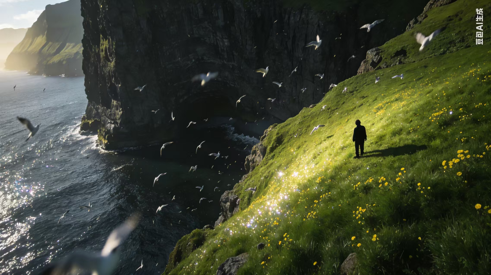
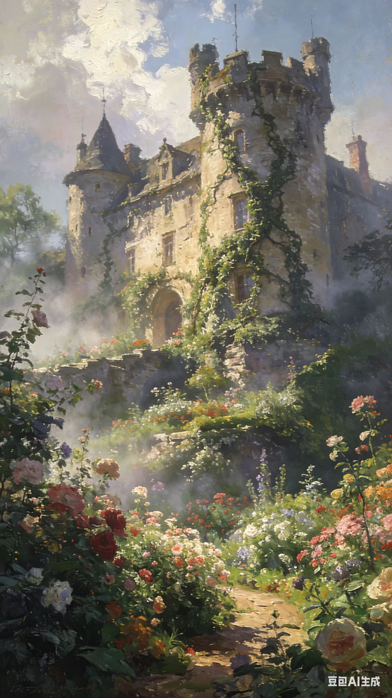
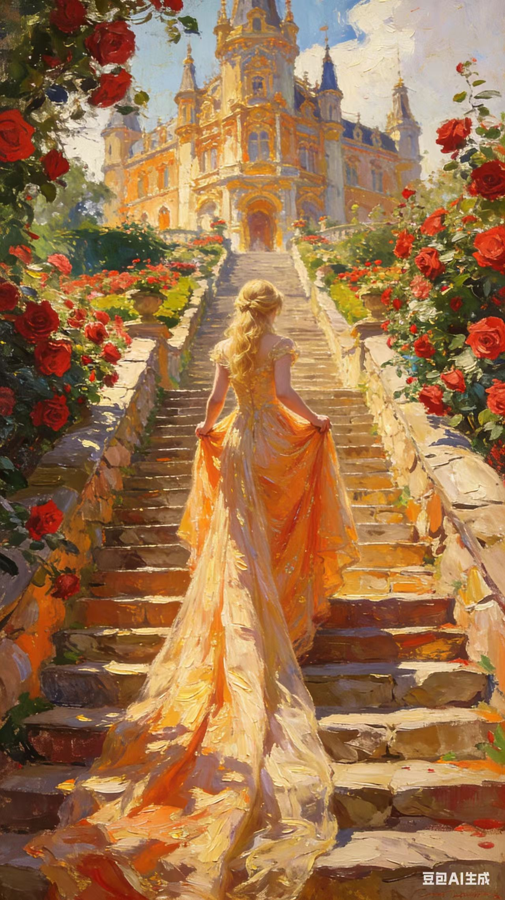
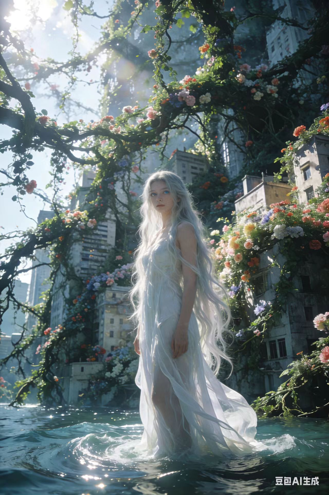
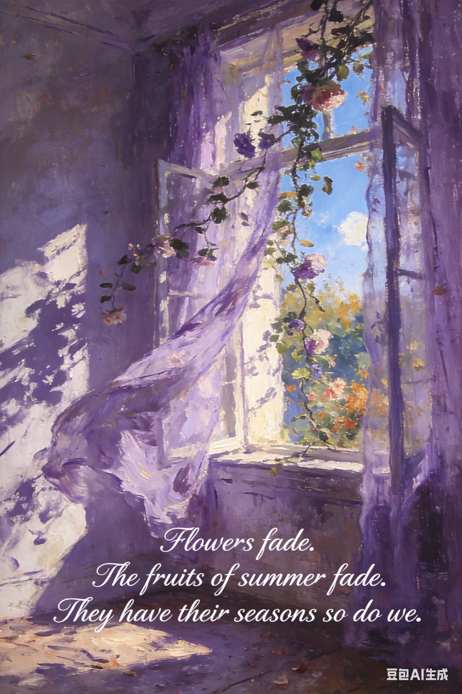

The mouth of the cave is a sentence the sea speaks without a reader—only listening stone.

What fog withholds still breathes; the walls remember footsteps that never quite arrived.

Amethyst light borrows a rumor from the garden: every threshold learns to close in its own season.

Some passages exist only in pigment—you walk toward them anyway, carrying your private weather.

Roses crowd the path because secrets require witnesses gentle enough to stay silent.